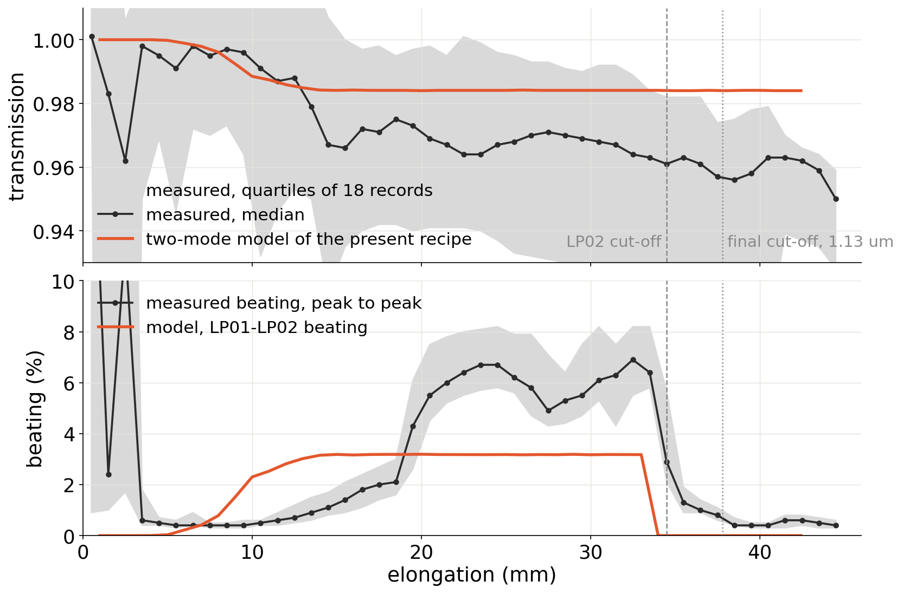
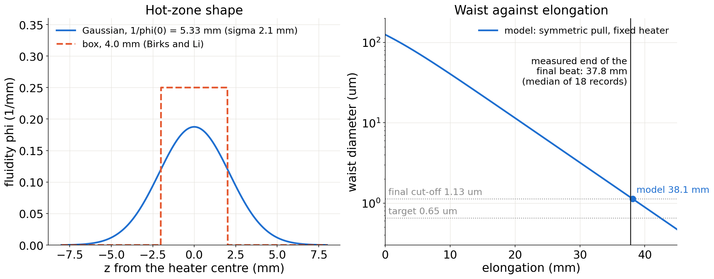
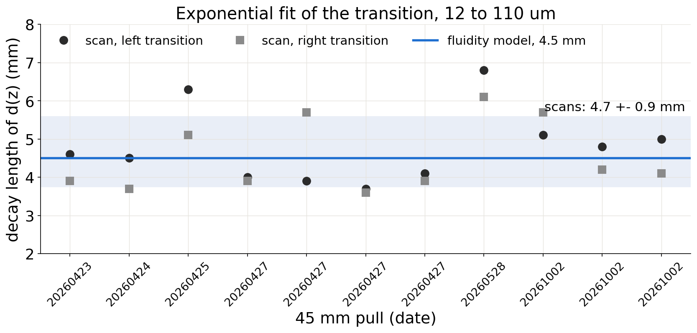
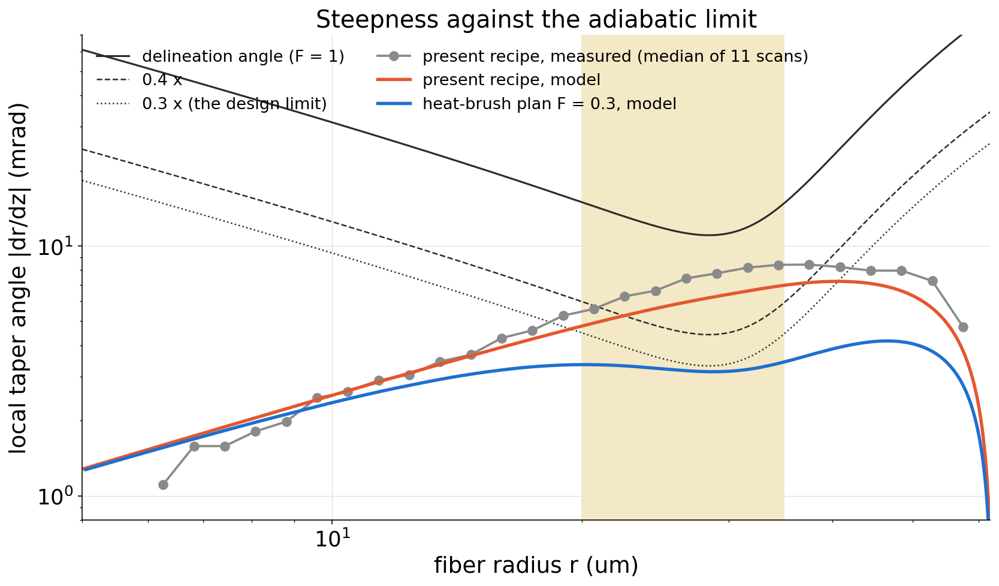
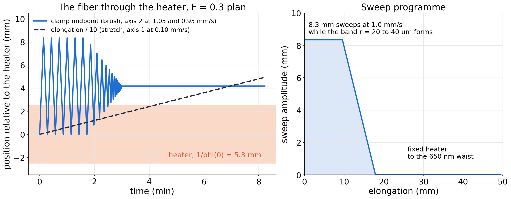
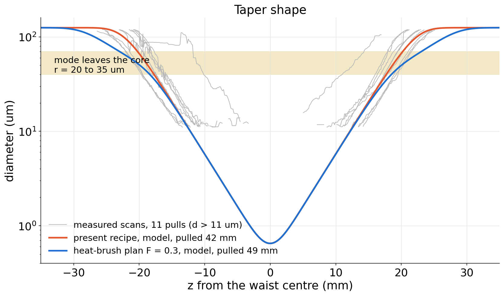
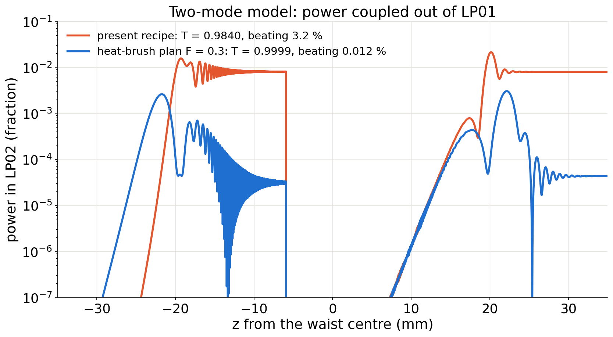
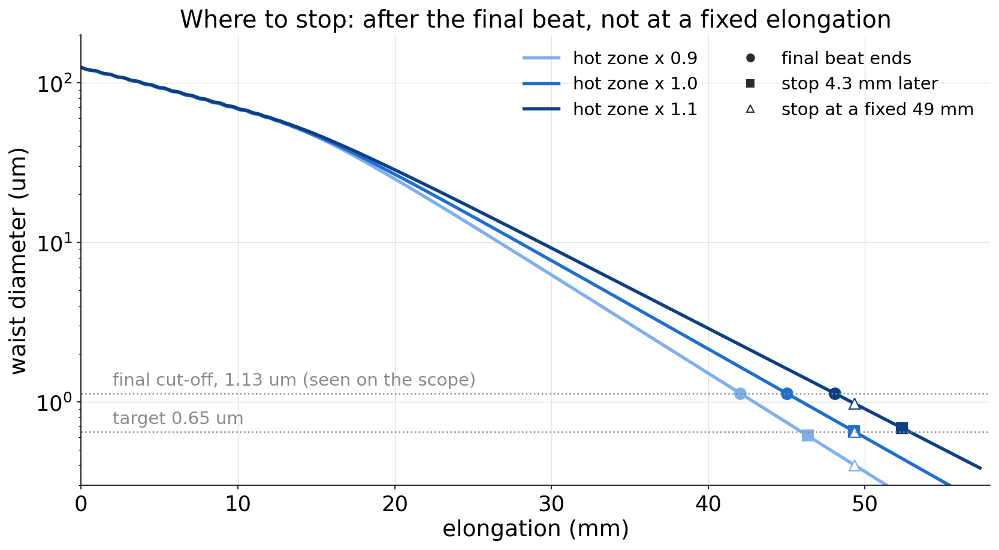

Lab110 nanofiber pulling, SMF-28 Ultra at 1539 nm
Why the present pull loses 3 to 4 %, how the heater is modelled, and what the brush changes
2026-10-05. Model: taperplan (fluidity model, two-mode coupling). Data: 18 transmission records, 11 image scans, 19 cut-offs.
125 um fiber diameter at the start
0.65 um target waist, 1 mm long
45 mm present pull at 0.1 mm/s, 7.5 min
Axes: 1 top OSMS26-200 stretch, 2 bottom HST-200X brush, 3 oven lift. Controller HSC-103.

0.965 to 0.975 transmission plateau from 15 to 33 mm; 0.95 at the end
5 to 7 % beating, peak to peak, from 20 to 34 mm
The beat frequency follows the LP01-LP02 beat of the model to 20 % and stops at the model's LP02 cut-off. The loss is set while the transitions form, long before the waist is thin.
results/adiabaticity/measured_vs_model_T.png; 18 records at 1539 nm with a cut-off, aligned to end-of-pull anchors or the clock model
Adiabatic rule (Love; Nagai and Aoki): the local angle |dr/dz| must stay below F times the delineation angle r (beta01 - beta02) / 2pi.
The delineation angle has its minimum, 11 mrad, at r = 28 um for SMF-28 Ultra at 1539 nm: the band where the fiber must be shallowest.
Nagai and Aoki reach 99.7 % with F = 0.4. The design here uses F = 0.3.

Fluidity model: glass flows where the heater makes it fluid; the hot zone is a Gaussian with 1/phi(0) = 5.33 mm.
38.1 mm model elongation at the 1.13 um cut-off; measured 37.8 mm (18 records). Box length from 19 cut-offs: 4.01 +- 0.05 mm.
The images cannot tell a Gaussian from a box; the cut-off elongation fixes the length, the shape is an assumption checked below.

4.7 +- 0.9 mm decay length of d(z), 11 scans, both sides
4.5 mm fluidity model with the calibrated Gaussian
The April scans are 10 to 20 % short along z (volume check), which makes their measured angles too large by the same factor. The three October scans pass the volume check.

0.70 largest angle over the delineation angle, measured median, at r = 30 um (model 0.57)
Above F = 0.4 from r = 24 to 39 um. The two-mode model with this steepness gives T = 0.970 and 6 % beating, as measured.
The shape is the main cause of the present loss. A further 0.5 to 1.5 % appears below a 1 um waist and is not a shape effect.
The heater cannot be made shorter, so the transitions cannot be made steeper than its own; sweeping the fiber through it makes them shallower where it matters. Sweep programme: constant from the start, then falling at da/dx = -1, chosen as the smallest that keeps |dr/dz| below 0.3 of the delineation angle with the hot zone at 0.9, 1.0 and 1.1 times its calibrated length.

8.3 mm sweep at 1.0 mm/s, 38 reversals
49.3 mm elongation, 8.2 min, stretch at 0.10 mm/s
81 lines HSC-103 internal program, three speed sets; the CSV is the simulation input
results/plan/motion_plan_650nm_1539nm_lphi0_5.33_F0.3.csv and _hsc103_program.txt. The waist ends 4.2 mm from the clamp midpoint towards clamp 1.


0.57 to 0.70 → 0.29 largest angle over the delineation angle in the band
0.984 → 0.9999 two-mode transmission, LP02 only; beating 3.2 % → 0.012 %
52 mm → 63 mm tapered length; the waist stays 1.9 mm long within 5 %
Expected on the machine: 0.985 to 0.995. The measured transitions are 20 % steeper than the model's (F = 0.3 would read 0.36), and the sub-micron loss of 0.5 to 1.5 % is not from the shape.

A 10 % error in the hot-zone length moves a fixed-elongation waist from 0.65 um to 0.40 or 0.98 um.
The final beat on the scope ends when the waist reaches 1.13 um, in any hot zone. Stopping a fixed 4.3 mm later gives 0.65 um at all three.
Surface tension, absent from the model, would shorten that stretch at slow speeds; one 0.03 mm/s pull with a record would measure it.
Joint review of the F = 0.3 plan CSV and Sim Full Cycle in the stage viewer.
Controller: set the three speed sets with SGSample, load the 81-line program into slot 2 with the SigmaKoki GUI, run it once without a fiber and compare the reported end positions with the plan.
Bench tests of program mode: axis 2 reversals inside a continuous range, the OUT marker, the stop command.
Measurements that settle the open points: an SEM of one 41 or 45 mm fiber (0.78 against 1.25 um decides the cut-off reading; waist length tells Gaussian from box); OUT1 wired to the scope for exact time anchors; one slow pull for surface tension.
Rule that stands: nothing runs on the pulling machine without Shayne present and a joint check; the planner never opens a serial port.
HANDOVER.md, docs/2026-10-04_adiabaticity_proposal.md, docs/2026-10-04_motion_executor_options.md